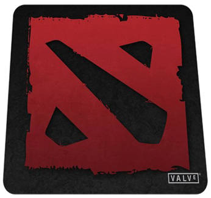

I love to play different video-game, but my lovely is DOTA 2  I love playing sports, especially football and tennis. Travel and visit new places.
Also I love to play a board game, my top-3:
Munchkin is the mega-hit card game about dungeon adventure . . . with none of that stupid roleplaying stuff. You and your friends compete to kill monsters and grab magic items. Don the Horny Helmet and the Boots of Butt-Kicking. Wield the Staff of Napalm . . . or maybe the Chainsaw of Bloody Dismemberment. Start by slaughtering the Potted Plant and the Drooling Slime, and work your way up to the Plutonium Dragon! Go down in the dungeon. Kill everything you meet. Backstab your friends and steal their stuff. Grab the treasure and run. Admit it. You love it. This award-winning card game, designed by Steve Jackson, captures the essence of the dungeon experience... with none of that stupid roleplaying stuff. You and your friends compete to kill monsters and grab magic items. And what magic items! Don the Horny Helmet and the Boots of Butt-Kicking. Wield the Staff of Napalm... or maybe the Chainsaw of Bloody Dismemberment. Start by slaughtering the Potted Plant and the Drooling Slime, and work your way up to the Plutonium Dragon...
In CATAN (formerly The Settlers of Catan), players try to be the dominant force on the island of Catan by building settlements, cities, and roads. On each turn dice are rolled to determine what resources the island produces. Players build by spending resources (sheep, wheat, wood, brick and ore) that are depicted by these resource cards; each land type, with the exception of the unproductive desert, produces a specific resource: hills produce brick, forests produce wood, mountains produce ore, fields produce wheat, and pastures produce sheep. Setup includes randomly placing large hexagonal tiles (each showing a resource or the desert) in a honeycomb shape and surrounding them with water tiles, some of which contain ports of exchange. Number disks, which will correspond to die rolls (two 6-sided dice are used), are placed on each resource tile. Each player is given two settlements (think: houses) and roads (sticks) which are, in turn, placed on intersections and borders of the resource tiles. Players collect a hand of resource cards based on which hex tiles their last-placed house is adjacent to. A robber pawn is placed on the desert tile.
The card game Dark Tales is inspired by classic fairy tales, retold in a dark style. The land of Dark Tales is populated by disturbing creatures and sinister characters, and the interaction between cards and magic items is the key to success: A character, event, or sword used at the right time can determine the fate of the game! Thanks to the many setting cards, the items you collect change their power from game to game.